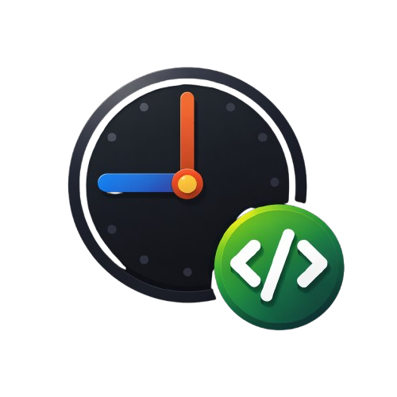
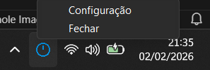
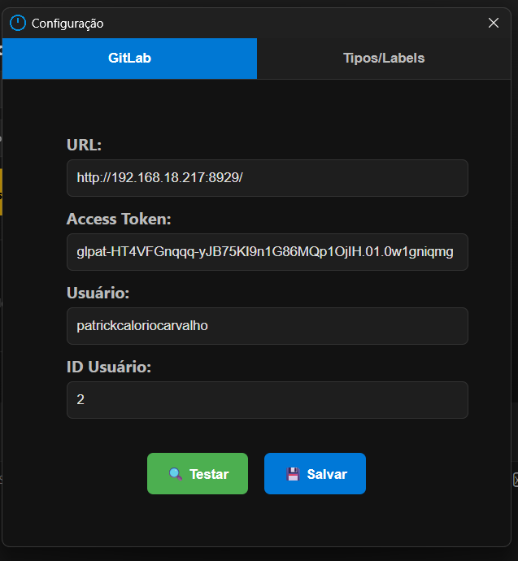
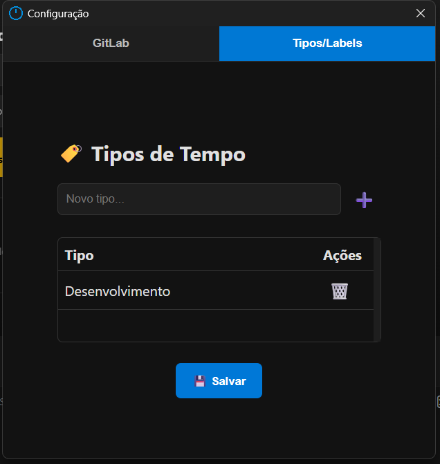
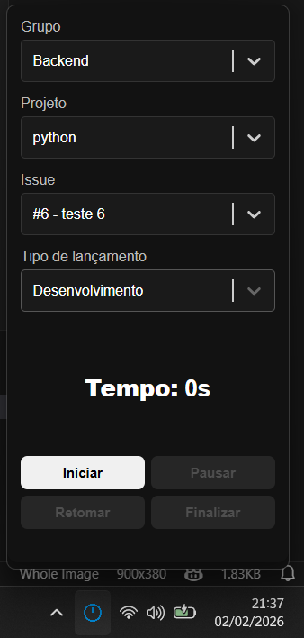
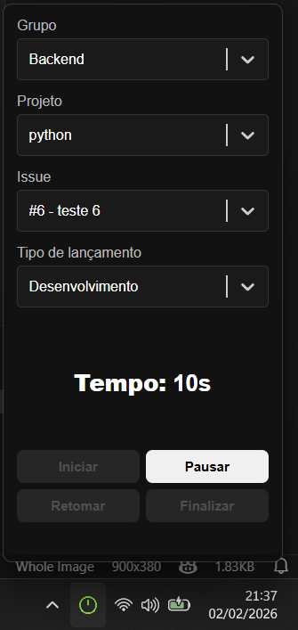
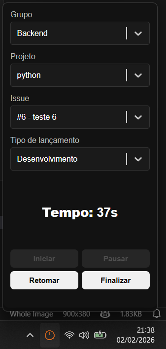
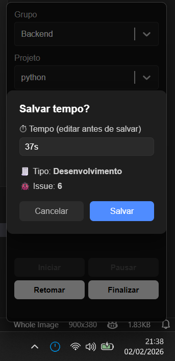

TraceTime
App Tauri + React para lançar tempo no GitLab
Visão geral
TraceTime permite iniciar/pausar/retomar e finalizar sessões de tempo e registrar esse tempo em issues do GitLab usando labels configuradas.
Funcionalidades
- Selecionar Grupo → Projeto → Issue
- Controlar sessões (iniciar, pausar, retomar, finalizar)
- Enviar lançamento ao GitLab com tipo (label)
- Tela de configurações para URL, token e labels
Como rodar (desenvolvimento)
npm install npm run tauri dev
Como configurar o GitLab (Personal Access Token)
Para que o TraceTime consiga listar projetos/issues e enviar lançamentos, você precisa de um Personal Access Token no GitLab.
- Abra seu GitLab e clique no avatar → Preferences → Access Tokens.
- Escolha um nome (ex: tracetime-token) e validade opcional.
- Marque a scope api (necessária para chamadas a issues/tempo).
- Clique em Create personal access token e copie o token gerado (guarde com segurança).
- Na aplicação, abra a tela de Configurações e cole o token no campo correspondente.
Configurar tipos de tempo (Labels)
Use labels no GitLab para categorizar lançamentos (por exemplo: development, bugfix, meeting, research). No App, informe esses labels separados por vírgula na tela de Configurações.
Recomendações:
- Prefira labels curtos e padronizados (ex.: dev, bug, meet).
- Documente no README do time quais labels representam cada tipo de trabalho.
- Evite duplicatas e variações de maiúsculas/minúsculas.
Padronizando lançamentos de horário
O objetivo deste projeto é padronizar como os desenvolvedores registram tempo. Sugestões de boas práticas:
- Use labels padronizados conforme definido pelo time.
- Preencha um resumo claro ao salvar o tempo (ex: "Implementação X — revisão PR #123").
- Adote um formato único para duração quando editar antes de salvar: 1h30m, 90m ou 00:30:00.
- Instrua o time a revisar os lançamentos semanalmente para corrigir inconsistências.
Exemplos de tela (ordem)
Galeria com screenshots na ordem: Tray → Configuração → Tipo → Idle → Rodando → Pausada → Finalizada.

O ícone na bandeja do sistema (tray) oferece acesso rápido: abrir a janela principal, ir para Configurações e encerrar o app. Útil para iniciar o app sem abrir o menu iniciar.

Informe a URL do GitLab (self-hosted ou gitlab.com), cole o Personal Access Token criado com scope api e defina os labels separados por vírgula. Esses labels aparecerão no seletor de tipos na tela principal.

Selecione o tipo de lançamento usando os labels configurados (ex.: dev, bug, meeting). Esses labels padronizam o motivo do lançamento e facilitam relatórios no time.

Estado inicial: selecione Grupo → Projeto → Issue e escolha o tipo (label). O botão Iniciar fica habilitado quando todos os campos obrigatórios estiverem preenchidos.

Sessão em execução: o preview de tempo atualiza periodicamente. Use Pausar para interromper temporariamente ou Finalizar para encerrar e abrir o modal de confirmação para salvar o lançamento no GitLab.

Sessão pausada: você pode retomar a sessão com Retomar ou finalizar. Ao finalizar, será exibido um modal onde é possível ajustar o tempo e confirmar o envio ao GitLab.

Após finalizar e confirmar, a sessão é registrada no GitLab (issue e duração). O app volta ao estado Idle (ou mantém histórico de última sessão dependendo da configuração local).
Cada imagem abre em tamanho real ao clicar.